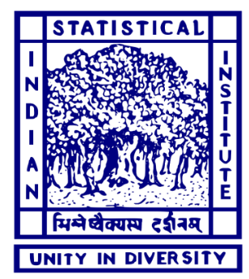
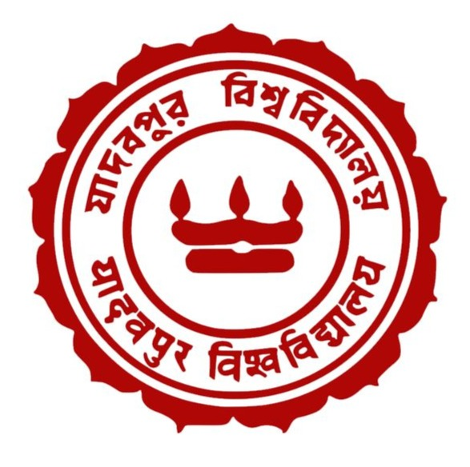
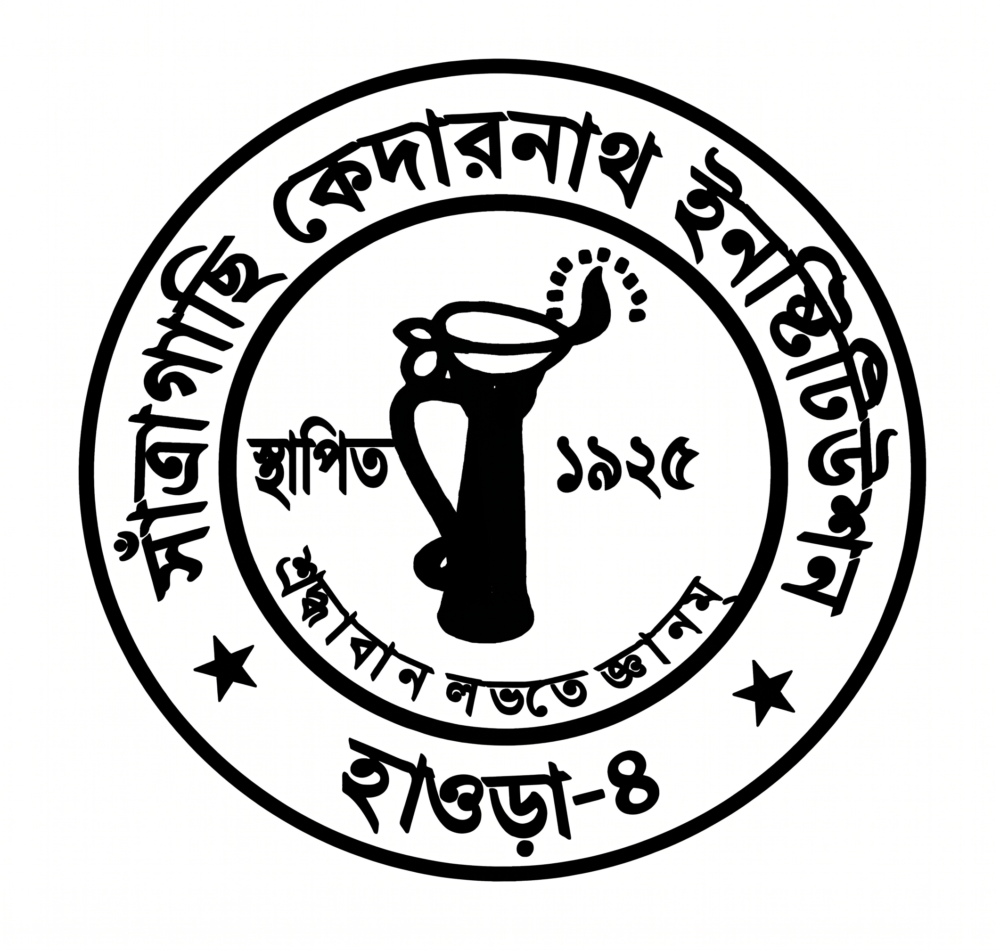

Education

Indian Statistical Institute, Kolkata
Doctor of Philosophy (Science)
2026 – Present

Jadavpur University
Master of Science in Mathematics
2023 – 2025
University of Calcutta
Bachelor of Science in Mathematics
2020-2023

Santragachi Kedarnath Institution
Secondary and Higher Secondary
Batch of 2020
Achievements
- Qualified Joint UGC-CSIR NET in Mathematical Sciences (2025), securing All India Rank 11 among 26,114 candidates; awarded the UGC Junior Research Fellowship (JRF).
- Qualified GATE in Mathematics, securing All India Rank 59 among 11,561 candidates (2026).
- Qualified JAM in Mathematics (2023).
- Qualified CUET in Mathematics (2023).
- Recipient of National Central Sector Scholarship at undergraduate level.
- Recipient of Gold Medal for Performance Excellence at the school level in SOF International Mathematics Olympiad (2020).